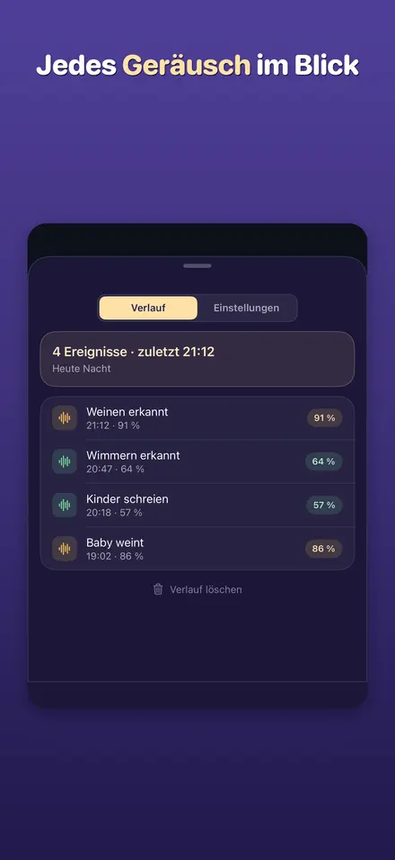

Obraz i dźwięk na żywo
Zobacz i usłysz dziecko w czasie rzeczywistym na jednostce rodzica, przez Wi-Fi i poza domem przez internet mobilny.
LaLeLu zamienia Twojego iPhone'a, iPada i Maca w prywatną nianię elektroniczną z kamerą: obraz i dźwięk na żywo, alarm przy płaczu i rozmowa z dzieckiem. Szyfrowanie end-to-end, bez nagrywania.
Na iPhone'a, iPada i Maca. Potrzebne dwa urządzenia Apple.

Jedno urządzenie zostaje w pokoju dziecka jako jednostka dziecka, drugie jest jednostką rodzica. iPhone'a, iPada i Maca możesz łączyć dowolnie.
Zobacz i usłysz dziecko w czasie rzeczywistym na jednostce rodzica, przez Wi-Fi i poza domem przez internet mobilny.
Rozpoznawanie dźwięków działa w całości na jednostce dziecka. Gdy aplikacja usłyszy płacz lub kaszel, dostajesz powiadomienie, także przy zablokowanym ekranie.
Mów do dziecka jednym przyciskiem, bez wstawania.
Biały, różowy i brązowy szum. Timer wyłącza dźwięki, gdy dziecko zaśnie.
Ciemny tryb nocny oszczędza oczy, a delikatne światło pomaga w ciemności.
Sprawdź, kiedy w pokoju dziecka było głośno. Historia zostaje lokalnie na Twoim urządzeniu.




Wiele aplikacji typu niania elektroniczna wymaga subskrypcji, osobnego zakupu na każde urządzenie albo własnego konta. LaLeLu nie.
| Kryterium | LaLeLu | Typowe aplikacje |
|---|---|---|
| Cena | Za darmo, na wszystkich urządzeniach | często subskrypcja lub zakup na każdą platformę |
| Konto / rejestracja | Brak, do parowania wystarczy Twój istniejący dostęp do iCloud | często wymagane jest własne konto |
| Reklamy i śledzenie | Bez reklam, bez SDK śledzących | czasem reklamy lub analityka |
| Obraz i dźwięk | Szyfrowanie end-to-end, nigdy nie nagrywane | czasem zapisywane lub przetwarzane na serwerach w chmurze |
| Rozpoznawanie płaczu | Na urządzeniu, bez wysyłania dźwięku do chmury | czasem tylko próg głośności lub analiza w chmurze |
| Urządzenia | iPhone, iPad i Mac, łącz dowolnie | często tylko jedna platforma |
Porównanie opisuje ogólne różnice na rynku, a nie konkretną aplikację.
Obraz i dźwięk trafiają bezpośrednio między Twoimi urządzeniami (WebRTC, DTLS-SRTP). Obraz widzą tylko urządzenia, które sam sparowałeś.
Obraz i dźwięk nie są zapisywane na żadnym serwerze ani na stałe w aplikacji.
Analiza dźwięku odbywa się lokalnie dzięki Apple SoundAnalysis. Żaden dźwięk nie trafia do nas.
Uczciwie: LaLeLu korzysta z Apple (iCloud, push) i Cloudflare do nawiązania połączenia i wysłania alarmu. Co jest przechowywane i jak długo, opisuje w całości polityka prywatności (po angielsku).
Tak. LaLeLu to darmowa aplikacja niania elektroniczna bez subskrypcji, bez reklam i bez funkcji ukrytych za paywallem. Nie ma okresu próbnego, który się kończy.
Nie. LaLeLu nie ma własnego konta ani rejestracji. Aby jednorazowo sparować dwa urządzenia, aplikacja korzysta z dostępu do iCloud, który już masz na iPhonie, iPadzie lub Macu.
Nie. Obraz i dźwięk są przesyłane na żywo, z szyfrowaniem end-to-end (WebRTC, DTLS-SRTP), bezpośrednio między Twoimi urządzeniami i nie są nagrywane na żadnym serwerze ani w aplikacji. Jeśli połączenie bezpośrednie nie jest możliwe, wciąż zaszyfrowany strumień idzie przez przekaźnik Cloudflare, który nie może go odszyfrować.
Dwóch urządzeń Apple: jedno zostaje w pokoju dziecka jako jednostka dziecka (iPhone, iPad lub Mac z kamerą i mikrofonem), drugie jest jednostką rodzica (iPhone lub iPad). Jako jednostka dziecka wystarczy stary iPhone. Android nie jest obsługiwany.
Tak. Aplikacja na Maca działa jako jednostka dziecka, z wbudowaną lub podłączoną kamerą i mikrofonem. Zostaje w pokoju dziecka, a Twój iPhone jest jednostką rodzica.
Tak. Łączy się przez to samo Wi-Fi, a także przez internet mobilny lub inne sieci. Oba urządzenia potrzebują internetu. W domu połączenie trwa zwykle jedną do dwóch sekund, w drodze często kilka sekund.
Rozpoznawanie dźwięków działa w całości na jednostce dziecka dzięki Apple SoundAnalysis. Żaden dźwięk nie jest wysyłany do chmury do analizy i nic nie jest zbierane do trenowania. Gdy aplikacja usłyszy płacz lub kaszel, dostajesz powiadomienie.
Tak. Alarm przychodzi jako powiadomienie push także przy zablokowanym ekranie. Zezwól na powiadomienia LaLeLu w ustawieniach iPhone'a.
Na urządzeniu dziecka tworzysz link do parowania lub kod QR i otwierasz go albo skanujesz na urządzeniu rodzica. Zajmuje to kilka minut. Link jest kluczem do parowania, więc udostępniaj go tylko zaufanym osobom.
Tak. Kilka jednostek rodzica może być połączonych jednocześnie, dzięki czemu oboje rodzice są na bieżąco, nawet z różnymi Apple ID.
Pobierz LaLeLu za darmo i w kilka minut skonfiguruj prywatną nianię elektroniczną.
Pobierz za darmo z App Store